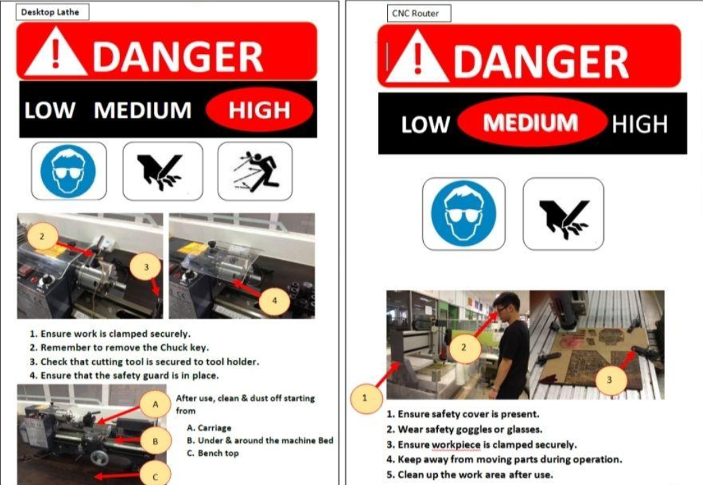

fablab safety rules and regulations
GENERAL SAFETY RULES & REGULATIONS
Here are some common safety images:
.png)
Also in Fablab, look out for these placards that say about how hazardous the machines are
1. Students are not allowed to enter and work in any laboratory or workshop in the absence of the lecturer-in-charge or Technical Supporting Officer (TSO).
2. Students must be properly attired according to the guidelines below :
a. Collared shirt or T-shirt and full-length trousers.
b. Do not wear loose-sleeved clothing and jewellery.
c. Do not use compressed air to clean your clothing.
d. Covered shoes must be worn at ALL time – NO open tops or open toes.
e. Students with long hair must tie up their hair to avoid entanglement with rotating machinery.
f. Certain laboratories and workshops required the use of additional safety equipment and
Personal Protective Equipment (PPE) such as goggles, safety glasses, masks, gloves, ear
plugs/earmuffs as instructed to protect against any workplace and machine hazards.
3. Eating and drinking are strictly prohibited in laboratories and workshops.
4. Students must switch off their mobile phones while working in laboratories and workshops.
5. Be alert. Observe and abide all warning signs and safety notices.
6. Be familiar with the location of the first-aid box, safety eye-wash and /or shower, chemical spill kit within each laboratory and workshop.
7. Know the location of all fire escape exits and assembly area.
8. No mischievous or malicious behaviour is allowed in the laboratory/workshop.
9. Safe operating or work procedures must be referred or adhered to.
10. Do not operate machines or equipment until you have been properly instructed by your lecturerin-charge or TSO.
11. Seek help from your lecturer-in-charge or TSO whenever you are in doubt.
12. Do not tamper with all safety devices and machine guards.
13. Do not take unsafe short cuts or by-pass any safety devices or controls.
14. Keep your work area clean before leaving the laboratory/workshop.
15. Report any UNSAFE conditions or UNSAFE acts to your lecturer-in-charge or TSO.
16. Report at once to your lecturer-in-charge or TSO if you are feeling unwell or injured.
17. For students doing a final year project in a laboratory or workshop, you have to conduct a risk assessment (RA) of the project and submit the conducted risk assessment form to your project supervisor for approval and signature. The approved and signed RA form must then be submitted to the project workshop/ laboratory for filing. You can request the blank risk assessment form from the Technical Support Officer or download the softcopy from Blackboard.
SPECIFIC SAFETY RULES & REGULATIONS IN FAB LAB AND MACHINE SHOP
It is recommended that you familiarise yourself thoroughly with the operation of the machine and adhere strictly to the following safety rules and regulations. If in doubt, please ask the Instructor or Technical Support Officer (TSO). In this way, we can prevent accidents that may result in operator’s injury, costly damage to the machine, or scrapped work-pieces.
1. A clean, neat, orderly machine and work area is the first step in safety. Keep all guards and covers in place and all machine cabinet doors closed.
2. Do not operate machines or equipment until you have been properly instructed and authorized to do so by your Instructor/TSO.
3. Do not start the machine or spindle until the work-piece and work-holding devices are securely fastened.
4. During any activity that requires the handling of work-holding devices, tools, measuring devices, or work-piece parts in the cutting zone, the machine’s motors must be in the stationary mode.
5. Know the position of the Emergency Stop push-button of the machine. Activate it during emergency situation.
6. Do not lean on any moving parts when the machine is in operation.
7. If you must remove hot tooling or sharp tools, switch off the machine and put on the hand gloves.
8. Never clear chips when the spindle is rotating. Never remove chips with your bare hands. Use a brush or tool designed for that purpose.
9. When operating machine, it requires your undivided attention. No “horseplay” or “monkey about” is allowed in your work area. If you need to attend to another matter, stop the machine until you can give it the full attention required.
10. Be alert for loose, worn, or broken parts and abnormal sounds and noises. When you suspect a problem, do not operate the machine. Report the problem at once to the Instructor or Technical Supporting Officer (TSO) for corrective action.
11. Do not use machine, if safety guard is not properly installed.
12. Do not leave any materials lying on the floor. Unwanted materials should be put into the scrap bins.
13. When operating the machine tools, ensure that other workshop users are not exposed to danger.
14. Always use a brush to sweep off all waste materials from the workbench.
15. Do not forget to clean up your workplace and machine tools after each use.
FIRST AID
In the event of a laboratory or workshop accident, students must immediately inform the lecturer-incharge or TSO.
FIRE EMERGENCY EVACUATION
Students must know the location of fire extinguishers.
Do not obstruct them with your personal belongings.
IN THE CASE OF ACCIDENT or FIRE :
1. Do not panic.
2. Quickly and calmly inform the lecturer-in-charge or TSO or follow the SP’s Three-step Emergency Procedure:
1. For ambulance or fire brigade, call 995
2. Instruct them to enter Gate 1 (Main Entrance) along Dover Road
3. Inform Campus Security by calling 6772-1234 for all emergencies and incident reporting.
3. Be familiar with the evacuation route and designated assembly area for the laboratory or workshop you are working in. These are posted on exit doors or at convenient location(s) within the laboratory or workshop.